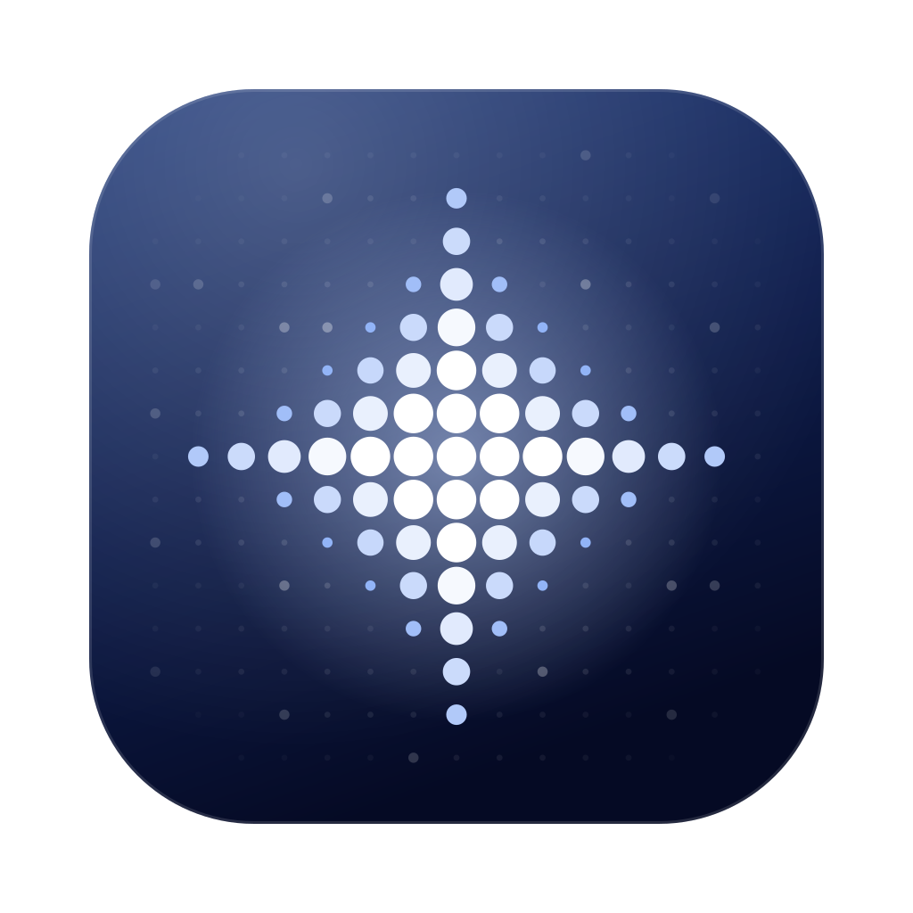
AI 编程工具用了多少，
点一下星星就知道。
How much your AI coding tools use,
one click on a star.
Starmeter 读取本机已有的用量记录，把 Claude Code、Codex、Cursor、Gemini CLI 等工具的 Token 和 API 等值费用、订阅额度、API 余额和正在跑的会话，放进 macOS 菜单栏或 Windows、Linux 托盘里的一个面板，终端里也能看。 Starmeter reads the usage records already on your computer and puts the tokens and API-equivalent cost of Claude Code, Codex, Cursor, Gemini CLI and more, your subscription limits, API balances and running sessions into one panel in the macOS menu bar or the Windows or Linux tray, and into your terminal too.
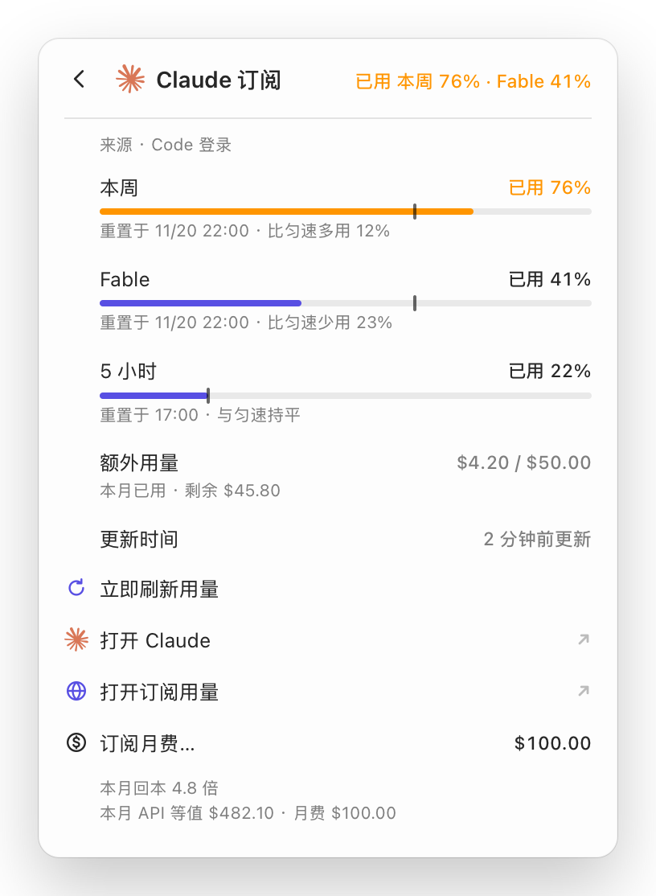
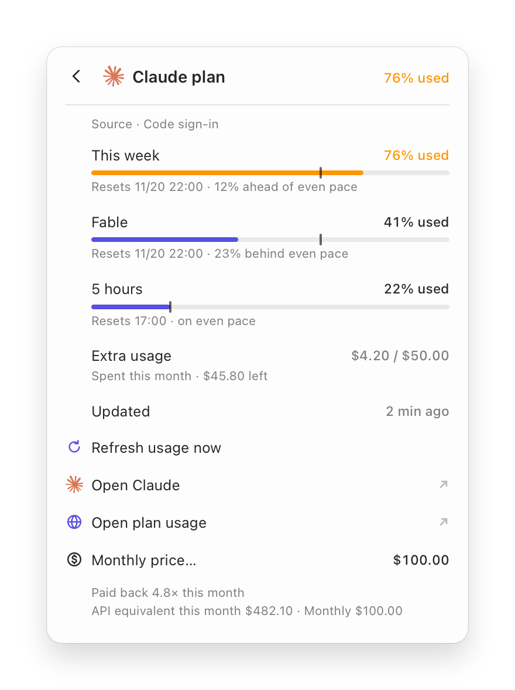
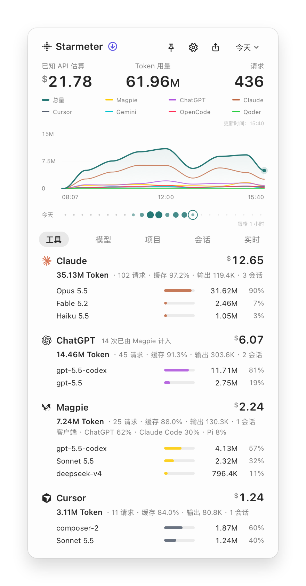
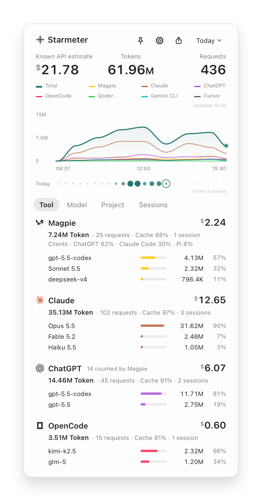
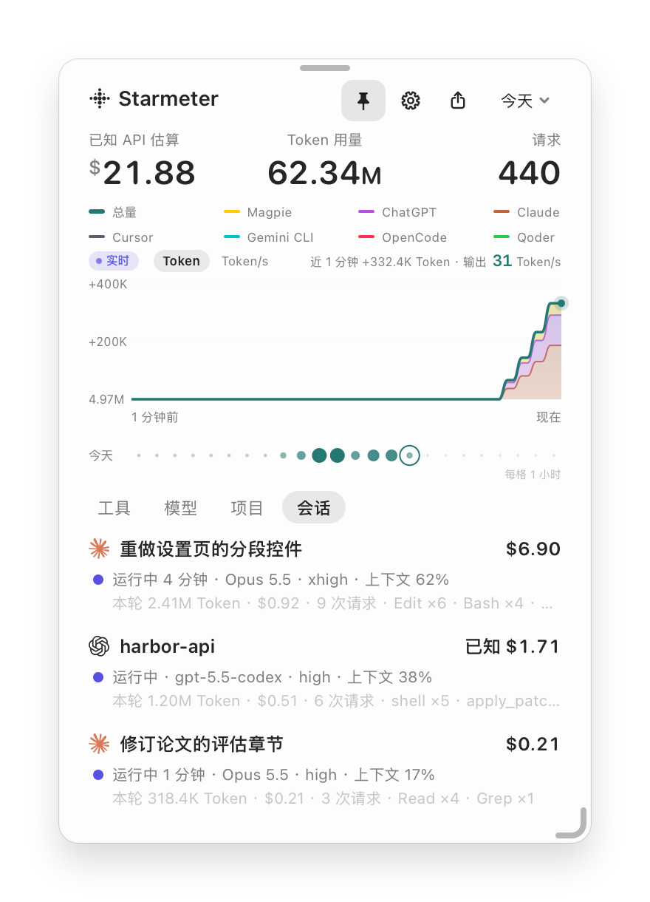
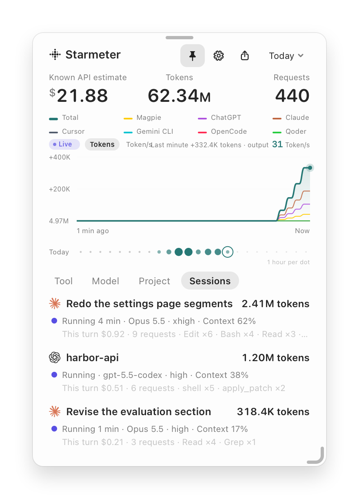
截图都由测试数据生成。界面有简体中文、繁體中文和英文，在设置里切换。Screenshots are made from test data. The panel speaks Simplified Chinese, Traditional Chinese and English; switch in Settings.
读取这些工具的本机记录Reads the local records of
- OpenCodex
- Magpie
- ChatGPT · Codex
- Claude Code
- Claude App
- Cursor
- DeepSeek Harness
- Gemini CLI
- OpenCode
- Qoder
- WorkBuddy
还看得到这些订阅与 APIAnd these subscriptions and APIs
- ChatGPT
- Claude
- Cursor
- DeepSeek
- Gemini
- Grok
- Kimi
- MiniMax
- Qoder
01 · Token 用量Token usage
每个工具、每个模型，各用了多少。Every tool, every model, and what each used.
Summary 写出今天（或你选的范围）的 API 等值估算、Token 和请求数，下面是趋势图、用量热力图和每个工具一张卡片：模型分布、缓存命中、输出和会话数。Summary gives the API-equivalent estimate, tokens and requests for today, or the range you pick; below are the trend, a usage heatmap and a card per tool, with its models, cache hits, output and sessions.
- 只算一次Counted once：Magpie、OpenCodex 等网关和经过它的客户端会各记一遍同一请求，Summary 只算一次。: a gateway such as Magpie or OpenCodex and the client behind it each log the same request; Summary counts it once.
- 按工具、模型或项目By tool, model or project：一键切换卡片的分组，用得多的排在前面；项目按会话所在的项目文件夹。: switch how the cards are grouped, the most used first; a project is the folder its session belongs to.
- 八种范围Eight ranges：今天到全部，热力图写出连续使用了多少天。: from today to everything, with your streak of active days under the heatmap.
- 旧记录不丢Nothing lost：工具自己清理掉的日志（Claude Code 默认只留 30 天）照样计入。: logs a tool cleans up itself (Claude Code keeps 30 days) keep counting.
- 连 WSL 一起WSL included：Windows 上，正在运行的 WSL 里的 Claude Code 和 Codex 也一起统计。: on Windows, Claude Code and Codex inside running WSL distributions count too.
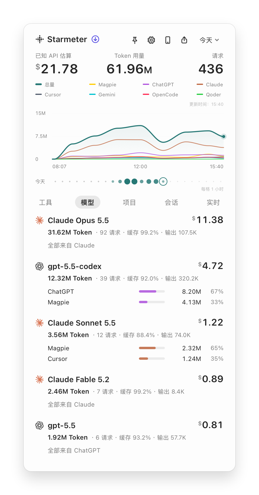
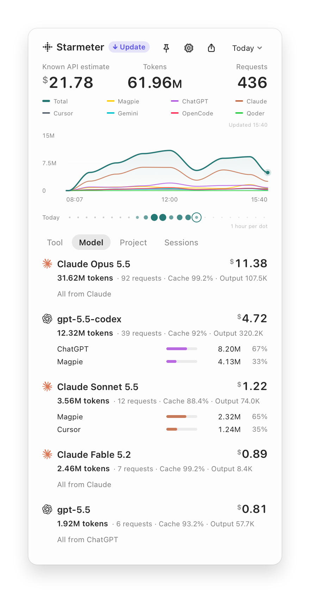
02 · 订阅额度Subscription limits
额度还剩多少，会不会提前用完。What's left of your plan, and whether it will last.
ChatGPT、Claude、Cursor、MiniMax 订阅逐个窗口写出已用多少、何时重置；70% 起变橙，90% 起变红。Qoder 读取它的桌面 App 自己记下的 Credits。ChatGPT, Claude, Cursor and MiniMax show each window's share used and when it resets, orange from 70% and red from 90%. Qoder reads the Credits its desktop app records itself.
- 匀速线Even pace：额度条上的竖线标出按时间匀速该用到哪，写明比匀速多用还是少用。: a mark on each bar shows where an even pace would be, and whether you are ahead or behind.
- 回本倍数Paid back：填上月费，看本月用量按 API 价值订阅价的几倍。: enter the monthly price to see how many times over this month's usage, at API prices, has paid for it.
- 提醒Alerts：用到 90%（或 70%、80%）时通知；每周额度快重置还没怎么用时，也可以提醒你。: a notification at 90% (or 70%, 80%), and optionally when a weekly window is about to reset barely used.
03 · API 余额API balances
余额和 Key，放在一处看。Balances and keys, in one place.
DeepSeek、Kimi、Grok 显示余额，Qoder 显示组织共享的加购 Credits，Claude 显示本月花费，ChatGPT 和 Gemini 可以测试 Key 是否可用。DeepSeek, Kimi and Grok show their balance, Qoder its organisation's Credits, Claude this month's spend; ChatGPT and Gemini keys can be checked.
- 多把 KeySeveral keys：每个 API 可以存多把，主页写合计和数量，如“余额 ¥12.00 (3)”。: each API holds several; the home page shows the total and the count.
- 余额提醒Low balance：按币种设一条线，低于它就通知。: set a line per currency and get notified below it.
- 只查真的Only real numbers：没有余额接口的就不显示余额，绝不推算或伪造额度。: no balance API, no balance shown; limits are never guessed.
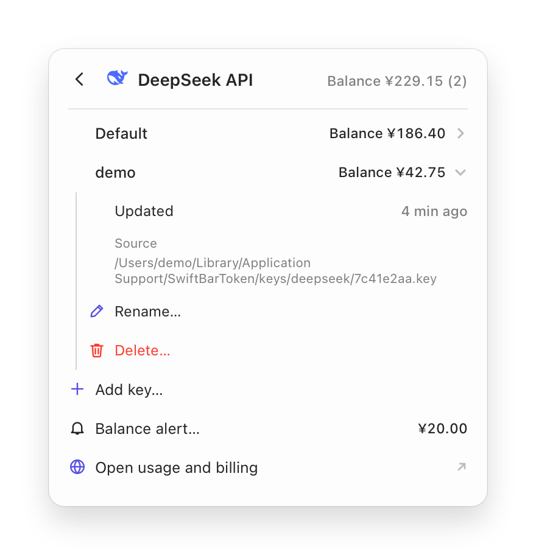
04 · 会话Sessions
哪个会话在跑，这一轮用了多少。Which session is running, and what this turn has used.
工具 / 模型 / 项目旁的第四个标签：所选统计范围里活动过的 Claude Code 与 Codex 会话，正在运行的和最新活跃的在前，先列 5 个，其余点“查看更多”。每个会话一张卡，写着它在所选统计范围里花了多少、是否正在运行、这一轮用了多少 Token、模型、推理强度和上下文用量。点开一个会话，看整个会话累计花了多少，和最近几轮各用了多少 Token、花了多少、调用了哪些工具。A fourth choice beside tool, model and project: the Claude Code and Codex sessions active in the range you chose, the running and most recently active first, five and the rest behind "Show more". A card for each, with what it cost in the range you chose, whether it is running, this turn's tokens, its model, reasoning effort and context used. Open one to see the whole session's total and its last few turns: tokens, cost and the tools they called.
- 跑完提醒Ping when it's done：一轮跑完，发一条通知。: a notification when a turn finishes.
- 不存内容No contents kept：只记状态、标题和数字，不保存提问和回复。: only status, titles and numbers; never prompts or replies.
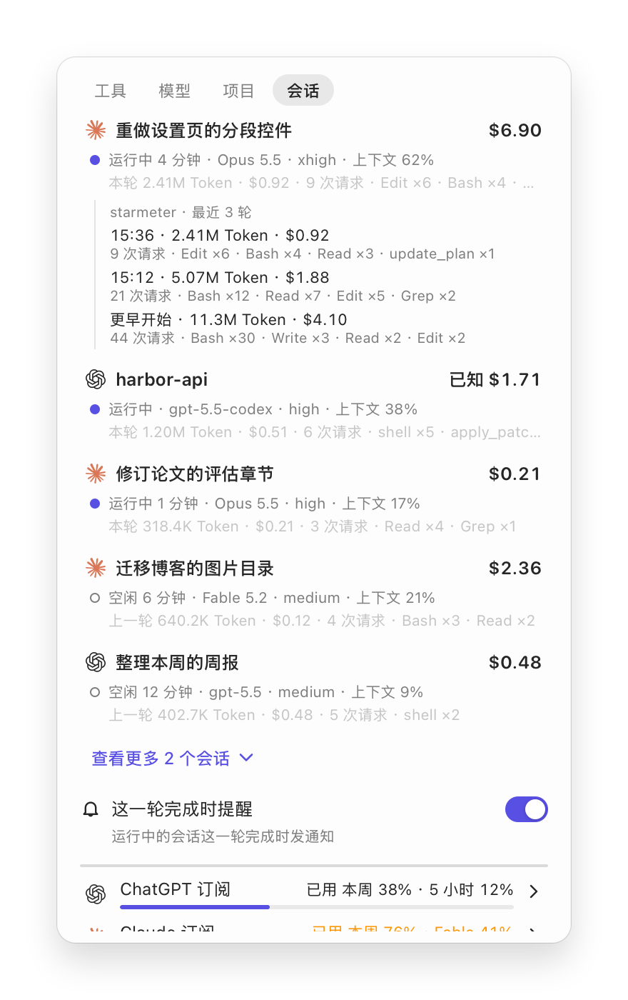
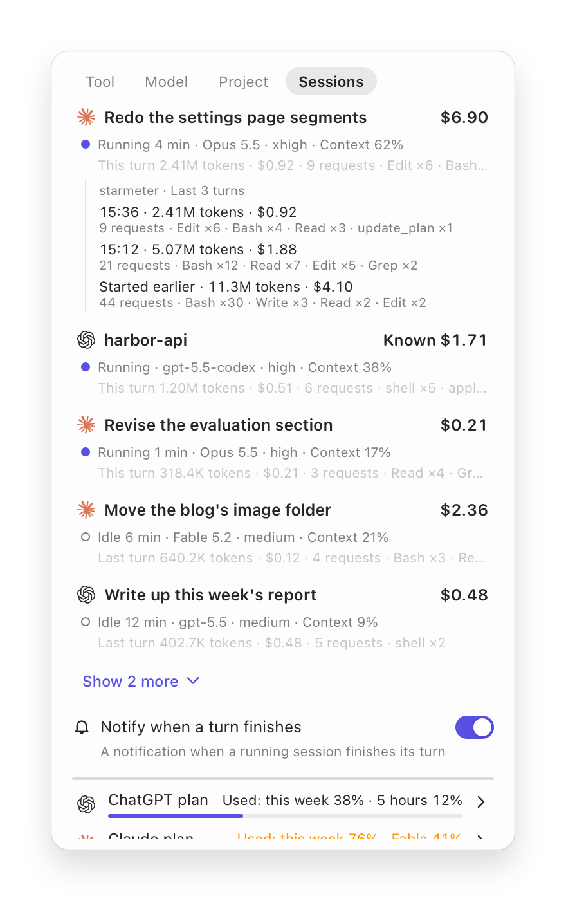
05 · 钉住Pinned
钉在屏幕上，看着它涨。Pin it, and watch it climb.
点图钉，面板浮在其他窗口之上，可以挪动、拉大。趋势图放大到“现在”，换成近 1 分钟的实时图（累计 Token 或每秒输出的 Token/s，一键切换），下面自动切到正在跑的会话，每 1–5 秒按本机日志刷新一次，数字滚动更新。Click the pin and the panel floats above your windows, movable and resizable. The trend zooms into now, a live chart of the last minute (the running total or output tokens a second, one click apart) with the running sessions under it, re-read from the local logs every 1–5 seconds as the figures roll.


07 · 手绘风格Hand-drawn
也可以是手画的。Or drawn by hand.
在“外观 → 风格”里选“手绘”，整个面板就像用彩色马克笔画在手账上，和手绘分享图出自同一支笔：三个数字分别用蓝、绿、紫三支笔写，估算压一道黄色荧光笔；趋势图只画手画的坐标轴，珊瑚色曲线的最新一点圈出来；每个工具的标志用它的颜色圈起来，每根线都带一点手抖。字母换成手写体，中文用霞鹜文楷。Choose Sketch under Appearance → Style and the whole panel looks drawn in a journal with coloured markers, by the same hand as the Sketch share picture: the three figures in blue, green and violet pens, the estimate over a yellow highlighter, the trend on hand-drawn axes with its latest point circled in coral, each tool's mark ringed in its colour, and every line a little unsteady. The letters turn handwritten, and Chinese is written in LXGW WenKai.
- 白天与夜里Day and night：浅色是暖象牙白点格纸上的彩色马克笔，深色是蒙着一层薄薄粉笔雾的黑板上的彩色粉笔。: coloured markers on warm ivory dotted paper in light, coloured chalk on a blackboard under a thin haze of chalk in dark.
- 排版不变Same layout：字母按系统字体的宽度缩放，汉字本来就和系统字体一样宽，每一行都还在原来的位置。: the letters are scaled to the system font's width and the Chinese characters are as wide as the system's, so every line stays where it was.
- 中文字体Chinese faces：霞鹜文楷（简体）和霞鹜文楷 TC（繁體）随 App 打包，面板和手绘分享图都用它们，不用另装，许可是 SIL Open Font License 1.1。: LXGW WenKai (Simplified) and LXGW WenKai TC (Traditional) come with the app for the panel and the Sketch share picture, nothing to install, under the SIL Open Font License 1.1.
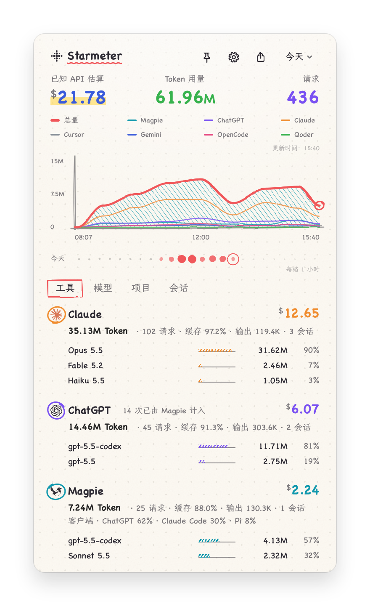
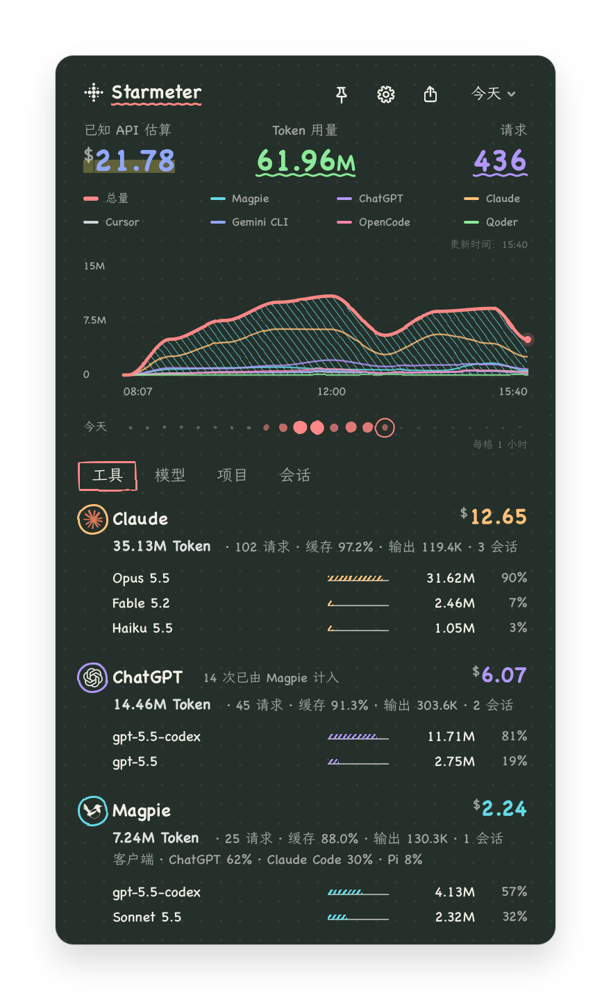
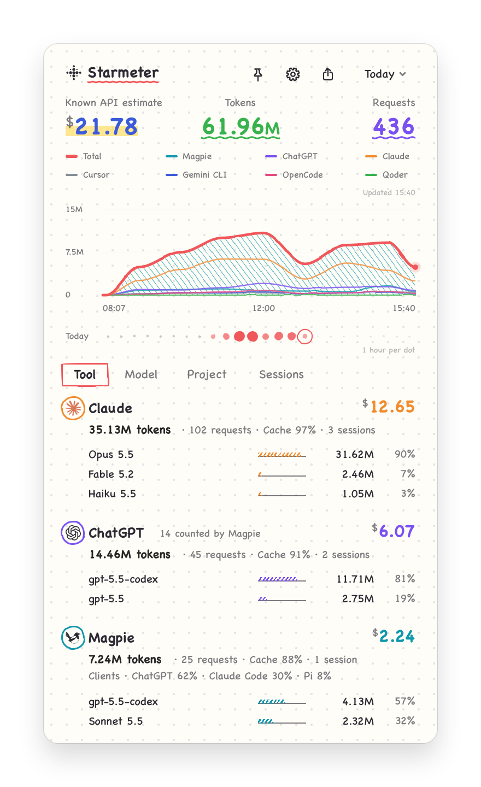
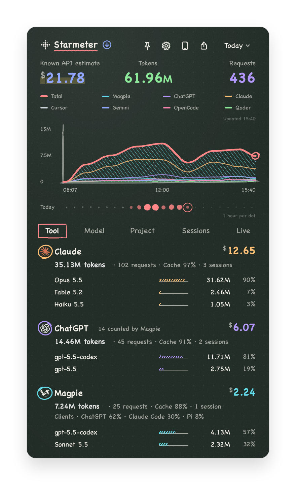
08 · 主页模块Home modules
只放你在用的。Only what you use.
首次打开会自动勾选这台电脑上装了的工具；之后在三列网格里随时开关，点名称就地设置目录、Key 和连接。没配置的来源不发任何请求。On first run it selects the tools installed on this computer; after that, switch modules on and off in a three-column grid, and click a name to set its folder, keys or connection. A source you haven't set up makes no requests.
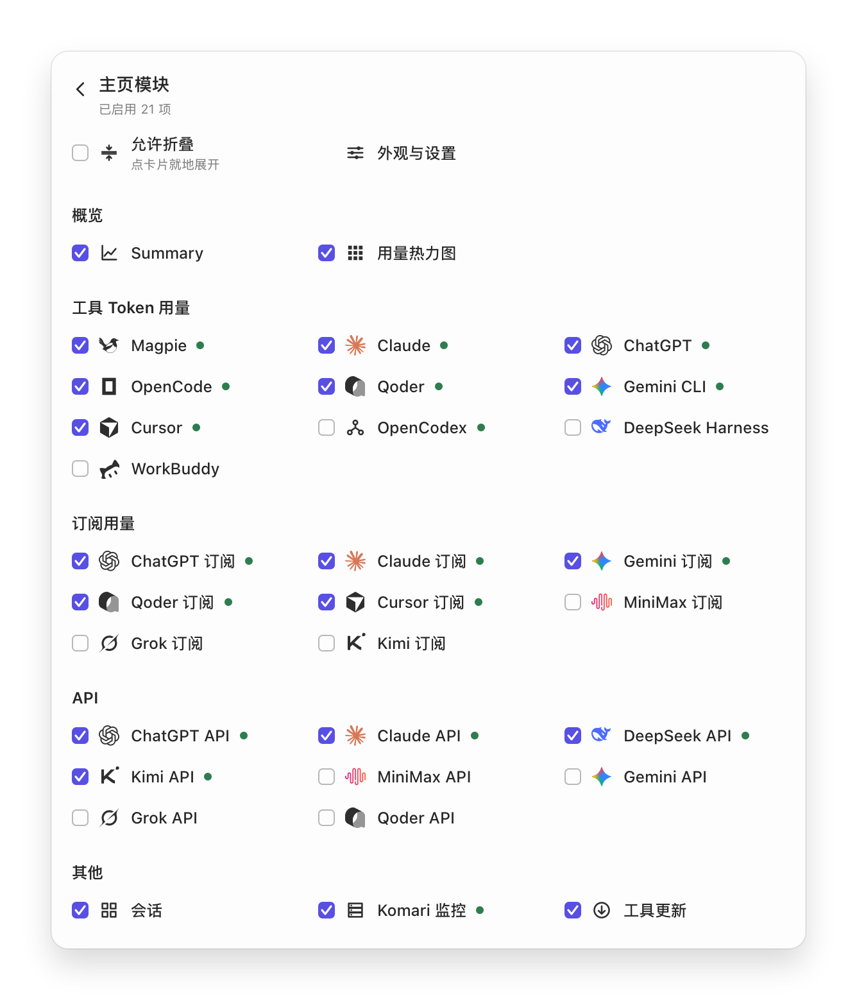
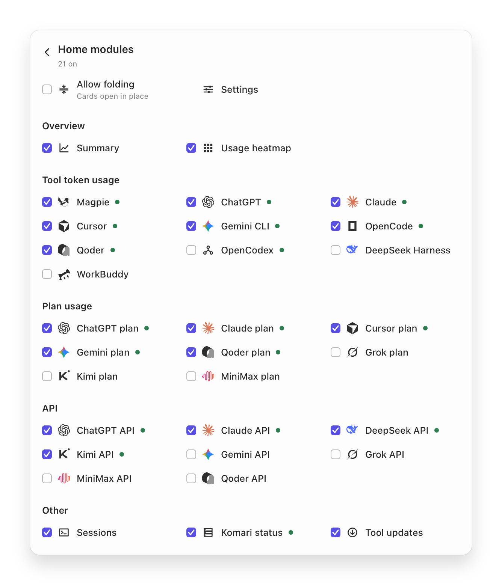
还有这些And more
随时随地Anywhere
- 全局快捷键Global shortcut
- 选一个组合键（如 ⌃⌥S），在任何地方按下就打开或收起面板。Pick a combination (⌃⌥S, say) that opens and closes the panel from anywhere.
- 在手机上看View on your phone
- 扫二维码，在手机浏览器里只读看主页，也能生成分享图；同一个网络直连电脑，不在时可选经 Cloudflare 的临时链接，一小时后关闭。Scan a QR code to see the home page in your phone's browser, read-only, and make share pictures there too: straight from the computer on the same network, or through a temporary Cloudflare link from anywhere else, closed after an hour.
- 多台电脑合并Combine computers
- 每台电脑选同一个同步文件夹（iCloud 云盘、Dropbox、OneDrive…），用量合起来显示，图表上方写“含 N 台电脑”。Choose the same synced folder (iCloud Drive, Dropbox, OneDrive…) on each computer and see their usage added up, with "N computers" above the chart.
- 命令行Command line
- 在终端里输入
starmeter，看今天的用量、额度和余额，数字和面板一样；加--json给脚本用。Typestarmeterin a terminal for today's usage, limits and balances, the same figures as the panel; add--jsonfor scripts.
提醒Alerts
- 用量提醒Usage alerts
- 订阅窗口用到你设定的比例时通知一次。Once per window when it reaches your line.
- 余额提醒Balance alerts
- 余额类 API 按币种各设一条线。A line per currency for balance APIs.
- 工具更新Tool updates
- 客户端有新版本时提醒，Claude Code、Codex CLI 一键在终端更新。New versions of your clients; Claude Code and Codex CLI update in a terminal with one click.
显示Display
- 菜单栏数字Menu bar figure
- 星星旁可加今天的估算或最紧张的额度。Today's estimate or the tightest limit beside the star.
- 人民币显示Yuan
- 估算按欧洲央行参考汇率换算，或填固定汇率。Estimates at the ECB reference rate, or a rate you set.
- 深浅色Light and dark
- 跟随系统，或固定浅色、深色。Follow the system, or pick one.
- 三种语言Three languages
- 简体中文、繁體中文和 English，第一次打开时在欢迎页就能选，之后在设置里切换。Simplified Chinese, Traditional Chinese and English: pick one on the welcome screen the first time, or later in Settings.
数据Data
- 导出用量Export
- 当前范围导出成 CSV 或 JSON，只有计数。The range on screen as CSV or JSON, counts only.
- 服务状态Service status
- 可选读取 Claude、OpenAI、Cursor 的官方状态页，出问题时标在卡片上。Optional: Claude, OpenAI and Cursor status pages, marked on the cards.
- Komari 监控Komari
- 顺便看看服务器在不在线。Your servers' status, while you're there.
隐私Privacy
用量留在你的电脑上。Your usage stays on your computer.
不用注册账号，也没有中转服务器：Starmeter 只读本机记录，只向你启用的服务的官方接口查询。No account and no relay server: Starmeter reads local records and asks only the official APIs of the services you turn on.
它会It does
- 只读本机日志，只记用量数字；项目只记文件夹名。Only read local logs, keeping usage counters and, of a project, its folder name.
- 把 Key 存在本机只有你能读的文件里。Keep keys on this computer, in files only you can read.
- 每天从 GitHub 检查一次价格表和新版本，不带 Cookie 或任何标识，可以关闭。Check GitHub daily for price tables and new versions, with no cookies or identifiers; this can be turned off.
- 只在你开启后读取 Claude、Cursor 的用量、服务状态页和人民币汇率。Read Claude and Cursor usage, status pages and the exchange rate only once you turn them on.
- 多台电脑合并时，只把电脑名称、工具、模型和用量数字写进你自己选的同步文件夹，由你的网盘同步。Combining computers, write only computer names, tools, models and counts to the synced folder you choose, and leave the syncing to your cloud drive.
- 在手机上看时，只在局域网里把数字直接发给手机，链接带一次性口令；选了“任何网络”才经过 Cloudflare 的临时链接，一小时后关闭。Viewing on your phone, send the figures straight to it over your local network behind a one-time key; only "Any network" goes through a temporary Cloudflare link, closed after an hour.
它从不It never
- 保存或上传对话内容。Saves or sends your prompts or replies.
- 把你的用量交给 Starmeter 自己的服务器：根本没有这样的服务器。Hands your usage to a Starmeter server: there is none.
- 在界面上显示 Key 的内容。Shows a key's contents.
- 保存、刷新或改写 Claude Code、Cursor 的登录令牌：令牌只在内存里。Saves, refreshes or rewrites the Claude Code or Cursor sign-in: the token stays in memory.
- 推算额度，或把没有价格的模型算成零。Guesses a limit, or prices an unknown model at zero.
费用是按官方 API 价格算出的等值估算，不是你的账单。这个网页不加载第三方资源，也没有统计代码。Costs are API-equivalent estimates at official prices, not your bill. This page loads nothing from third parties and has no analytics.
下载Download
选一个文件，装上就能用。Pick one file and you're set.
都在 GitHub 的最新发布页上，按下面的名字找附件。All on the latest GitHub release; look for these names among the files.
brew install --cask timecatbit/tap/starmeter
brew install timecatbit/tap/starmeter-cli
不确定 Mac 芯片？苹果菜单 → 关于本机：写“芯片：Apple M…”选 Apple Silicon，写“处理器：Intel…”选 Intel。Mac 独立版预览未做 Apple 公证，首次打开被拦时到“系统设置 → 隐私与安全性 → 仍要打开”。只要命令行：Mac 和 Linux 用 Homebrew 装（不必装 App），或下载 Mac · Command line、Linux · Command line 压缩包；.deb 和 Windows 版自带 starmeter 命令。安装细节见 README。
Not sure which Mac? Apple menu → About This Mac: "Chip: Apple M…" means Apple Silicon, "Processor: Intel…" means Intel. The Mac preview isn't notarized; if macOS blocks it at first, use System Settings → Privacy & Security → Open Anyway. For just the command line, use Homebrew on a Mac or Linux (no app needed) or the Mac · Command line and Linux · Command line archives; the .deb and the Windows versions include the starmeter command. Full steps are in the README.